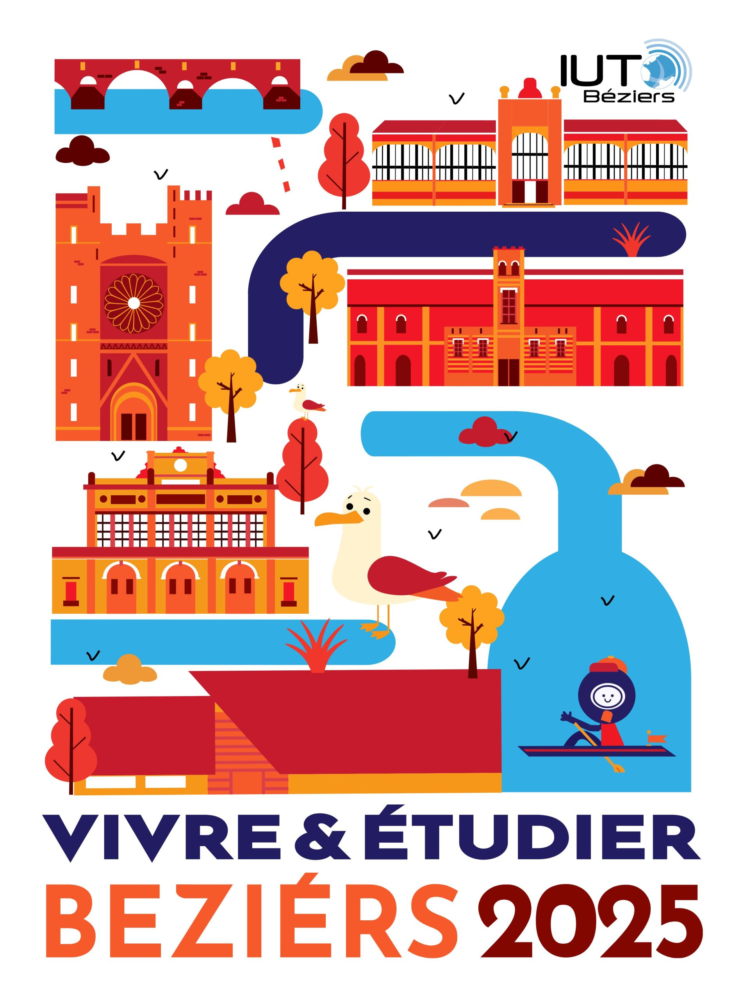

Vivre et Étudier à Béziers en 2025
Dans le cadre de ma formation en MMI à l’IUT de Béziers, j’ai participé au projet « Vivre et Étudier à Béziers en 2025 », dirigé par Caroline Surribas.
L’objectif : proposer une vision dynamique et inspirante de la ville pour mieux attirer les étudiants de demain.
Nos productions ont été mises à l’honneur lors des vœux de la direction de l’IUT, et ont reçu un accueil très positif.
À cette occasion, Robert Ménard, maire de Béziers, a salué notre travail et a même souhaité l’exposer à la mairie, nous conviant ensuite à un vernissage officiel.
Ce projet m’a permis de travailler sur une communication territoriale concrète, avec une visibilité réelle et une portée locale importante.
